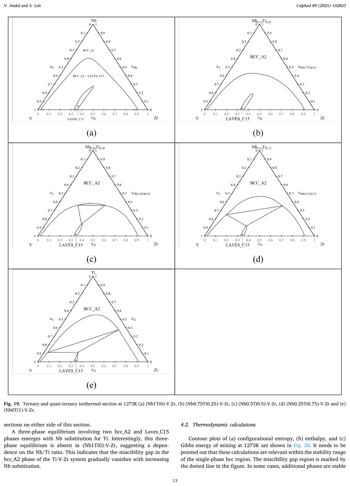
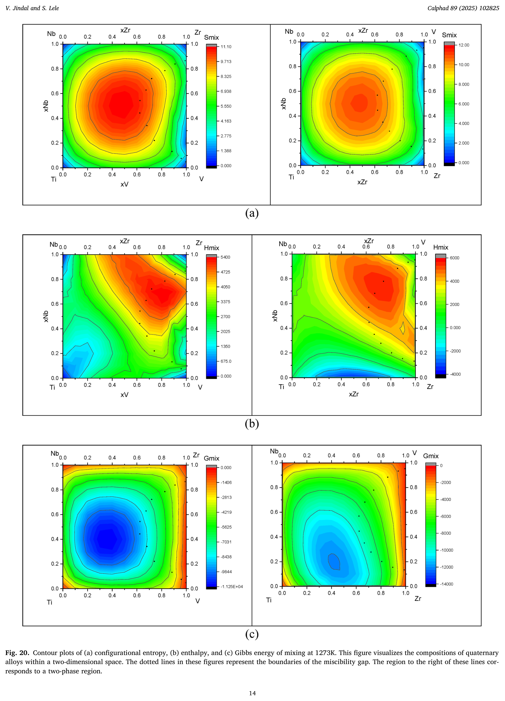
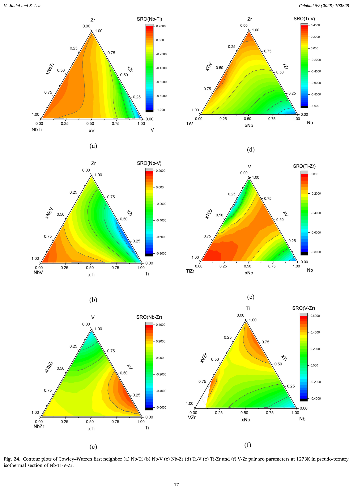

Multicomponent Cluster Variation Method: Application to High Entropy Alloys
Department of Metallurgical Engineering, IIT (BHU), Varanasi, 221005, India
Calphad 89 (2025) 102825Background & Motivation
Cluster expansion (CE) methods express the configurational thermodynamics of alloys using correlation functions (CFs) and cluster expansion coefficients (CECs). Most CE work has been limited to binary alloys.
A key problem: when extending from binary to multicomponent systems, the choice of basis changes — so CFs and CECs of a subsystem cannot simply be reused in a higher-order system. This is a major obstacle to building self-consistent multicomponent thermodynamic databases, unlike the CALPHAD approach.
The New Framework
This work introduces cluster variables (CVs) — the fraction of cluster configurations of various types — as a basis-independent alternative to conventional correlation functions.
A carefully selected, symmetric/anti-symmetric subset of independent CVs is chosen as CFs, such that:
- Lower-order CECs are directly inherited into higher-order systems, without transformation.
- The number of CFs/CECs does not grow exponentially with the number of components.
- Existing CALPHAD-style databases can be adapted to this CE-CVM approach.
Derivations are given for disordered bcc, fcc, and hcp structures using the tetrahedron (bcc/fcc) and triangle–tetrahedron (hcp) cluster approximations.
Case Study: The Nb–Ti–V–Zr Refractory HEA System
The framework was demonstrated by building a self-consistent set of CECs for the disordered bcc phase of the Nb-Ti-V-Zr system, using optimized binary and ternary subsystem CECs as building blocks:
Nb–Ti Nb–V Nb–Zr Ti–V Ti–Zr V–Zr Nb–Ti–V Nb–Ti–Zr Nb–V–Zr Ti–V–Zr → Nb–Ti–V–Zr
No quaternary interaction terms were required — the quaternary CE was built entirely from binary and ternary CECs, illustrating the central advantage of the method.
Ternary & Quasi-ternary Sections

Isothermal sections at 1273 K for (NbxTi1−x)-V-Zr. The bcc miscibility gap with the Laves_C15 phase gradually vanishes as Nb substitutes for Ti.
Thermodynamic Contour Maps

Configurational entropy, enthalpy, and Gibbs energy of mixing at 1273 K across the Nb-Ti-V-Zr composition space.
Short-Range Order (SRO)

Cowley–Warren first-neighbor SRO parameters, predicting Nb–V and Ti–Zr co-clustering tendencies within the quaternary alloy.
Key Results
- Entropy stabilization: Maximum configurational entropy of mixing (11.09 J/mol·K) occurs near the equiatomic composition — about 4% below the ideal value.
- Enthalpy drives phase separation: Positive enthalpy of mixing across the composition space, strongest in Nb-V-Zr alloys; Ti addition counteracts this tendency and stabilizes the solid solution.
- Gibbs energy minimum is shifted toward the Ti-rich region (xNb=0.115, xTi=0.46, xV=0.085, xZr=0.34), where enthalpy of mixing is nearly zero.
- SRO predicts clustering: Nb and V atoms preferentially co-segregate, while Ti and Zr tend to stay close together — at 573 K, an equiatomic alloy is predicted to separate into a V-rich and a Zr-rich bcc phase.
- Maximum stabilization of the quaternary bcc solution occurs relative to pure components, with meaningful stabilization retained relative to ternary subsystems — consistent with prior statistical analyses of HEA formation.
Why It Matters
| Conventional CE | Basis changes with system order → CECs must be re-derived for each new alloy system. |
|---|---|
| This work (CVCF basis) | Basis is invariant → binary/ternary CECs plug directly into any higher-order system. |
| Practical outcome | Enables construction of self-consistent, extensible CE-CVM databases — analogous to CALPHAD databases — for rapid multicomponent alloy design. |
| Bonus capability | Cowley–Warren SRO parameters fall out directly from the Gibbs energy minimization, with no extra calculation needed. |
Conclusions
This work establishes a basis-independent cluster expansion formalism in which cluster expansion coefficients of all subsystems can be directly incorporated into the cluster expansion of any higher-order system — contrary to the common belief that the number of parameters grows exponentially with the number of components. Demonstrated on the Nb-Ti-V-Zr refractory HEA system, the approach shows that both entropy and enthalpy govern bcc stabilization, and enables systematic, quantitative SRO-guided alloy design without requiring an experimental study of every new composition.
Citation
V. Jindal, S. Lele, Multicomponent cluster variation method: Application to high entropy alloys, Calphad 89 (2025) 102825. https://doi.org/10.1016/j.calphad.2025.102825
Correspondence: vjindal.met@iitbhu.ac.in